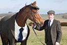

About Our Staff
These are our highly trained horse specialists that have graduated at the top of thier class in the best horse classes around the world, and we put full trust in them to keep you and the horses in good condition!
These are our highly trained horse specialists that have graduated at the top of thier class in the best horse classes around the world, and we put full trust in them to keep you and the horses in good condition!
Josh is the owner of this camp and has devoted his life to growing the camp to reach its full potential. Josh has had over fourty years of training and has won many awards for his renouned activity in the horse community.
Tyler is our lead horse wrangler and manager. He is one of the most qualified horse and worker managers in the northwest.
Roger is the working man of the establishment. He cleans, corrals, and feeds all of the horses. Roger has been doing his job for over 20 years and is a very reliable worker.